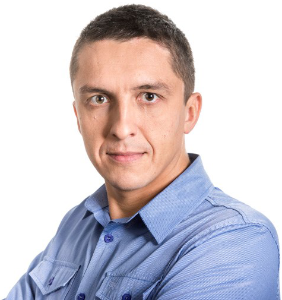

e-learning Solutions Designer. Bug to e-learning caught in 2013, taking part in the project implementation of the new e-learning platform for the largest Polish company drugstore,
responsible for the optimization of e-learning platform and supervising liquidity operations training.
- Education
-
Social Higher School of Enterprice and Management
Degree: Master
Field of study: Foreign Trade Logistics
COSINUS - College
Degree: engineer - IT specialist
Field of study: Faculty of Computer Science
- Skills
-
Knowledge of programs
- Articulate Story Line 2 - intermediate
- Articulate Story Line 3 - intermediate
- Articulate Story Line A360 - intermediate
- Articulate Studio 13 - intermediate
- Adobe Captivate 8 - base/intermediate
- GoAnimate - intermediate
- Photoshop - base
- Gimp - base
Technologies
- Moodle
- SCORM
- WBTServer
- Lightroom
- CorelDraw
- Visual Studio
- Git
- Linux
- Python
- HTML
- WorldPress (Muffin Group)
- Basic knowledge of SQL (phpMyAdmin)
Other
- Experience
-
Rossmann SDP Specialist for e-learning 05/2018 - Today
- Administration LMS (Learning Management System) - Moodle
- User support platform LMS (service desk, e-mail, telephone) about 20k users on the platform
- Create reports of training activity of the participants, groups
- WorldPress (Muffin Group) Administrator
- Co-conducting e-learning projects
- Cooperation with external e-learning training providers
- Cooperation with the IT department in terms of troubleshooting technical
- Development of functionalities used on the e-learning platform
- Quality control of e-learning courses
- Participation in meetings and projects organized by the Recruitment and Training Department
- Experience
-
AVIVA Poland Specialist for e-learning training and knowledge management 05/2018 - 06/2018
- Creating and Modification e-learnig courses - Articulate Storyline 2
- Creating knowledge pills, training videos and other multimedia materials: Articulate Storyline 2, Powtoon, Prezi, Camtasia 9
- Administration LMS (Learning Management System) - HCMDeck (MyNetwork)
- Email and telephone support for training users
- Webinar menagment/administration - Clikmeeting
- Cooperation with external e-learning training providers, recording studios, and photo agencies
- Development of functionalities used on the e-learning platform
- Quality control of e-learning courses,
- Participation in projects implemented by AVIVA
- Experience
-
e-learning.pl E-learning solutions designer 02/2016 - 04/2018
- Creating e-learning courses in the tools:
- Articulate Storyline 2/3, A360, Articulate Studio 13, GoAnimate
- Creating e-learning video courses in the - Camtasia 9
- Graphic design using Adobe Photoshop CS6, Adobe Ilustrator
- Administration LMS (Learning Management System) - Moodle,
- User support platform LMS (e-mail and telephone) about 10-15k users on the platform,
- Create reports of training activity of the participants, groups,
- Implementation of training in SCORM format on the platform,
- participation in the implementation of the new platform (moodle 3.2.5+)
- -platform configuration (layout, training implementation, user base, functional reliability)
- Quality control of e-learning courses,
- Research on local and global trends, training solutions,
- The search for new trends in e-learning
- Experience
-
Lodz AirportAdministration of the E-learning Platform 03/2014 - 03/2016
- Administration of the E-learning Platform.
- Implementation of e-learning in Lodz Airport - LMS (Learning Management System) Moodle
- Analysis of needs and requirements,
- Preparation of implementation offers e-learning platform based on an analysis of needs,
- Administration LMS (Learning Management System) - Moodle
- User support platform LMS (e-mail and telephone) about 100 users on the platform
- Configuring the platform for the needs of Lodz Airport
- Installing the plug-ins to the platform
- Testing before deployment platform
- Eliminating errors
- Prepare training / e-learning material
- Adapting training to the requirements of e-learning platform,
- Conversion of training materials
- Implementation of training in the form of SCORM platform, setup and administration
- Create a training and testing using: Adobe Captivate 8, Articulate Storyline 2, Articulate Studio, iSpring
- Trainings
-
- Training with Articulate Storyline 2 Basic and Advanced (e-learning.pl)
- Training with Adobe Captivate 8 (2edu.pl)
- Training with Instructional Design Basic and Advanced (2edu.pl)
- Training / MOODLE Course E-Learning Platform
- Training / Python Course
- Training with Advanced communication in a telephone conversation
- Training on Assertiveness
- Training on Counteracting Mobbing at work
- Training in the field of protection of classified information
- Training with Professional Customer Service
- Training in Civil Aviation Security Awareness
- Publications
-
- How to create video material for e-learning trainings.Link
- Most frequently made mistakes - what to avoid by creating e-learning training.Link
- Everything you would like to know about whiteboard animations, but you have not yet had the opportunity to ask ...Link
- Tools helpful in creating video learning.Link
- Links
-